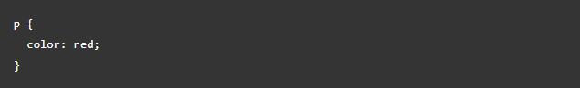
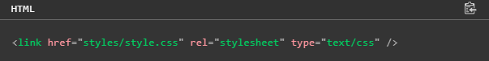
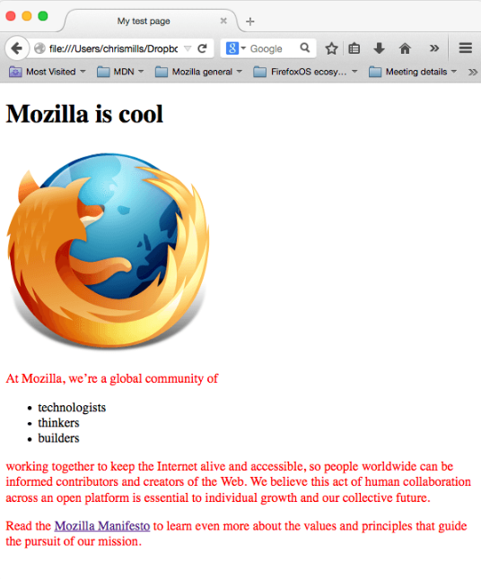
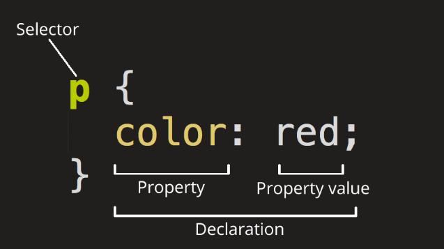
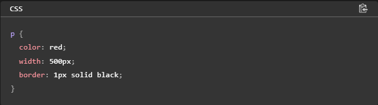

Проект ученика 10 класса
CSS
CSS (Cascading Style Sheets) — это код, который вы используете для стилизации вашей веб-страницы. Основы CSS помогут вам понять, что вам нужно для начала работы. Мы ответим на такие вопросы как: Как сделать мой текст черным или красным? Как сделать так, чтобы контент появлялся в определённом месте на экране? Как украсить мою веб-страницу с помощью фоновых изображений и цветов?
Как и HTML, CSS на самом деле не является языком программирования. Это не язык разметки - это язык таблицы стилей. Это означает, что он позволяет применять стили выборочно к элементам в документах HTML. Например, чтобы выбрать все элементы абзаца на HTML странице и изменить текст внутри них с чёрного на красный, вы должны написать этот CSS:
Давайте попробуем: вставьте эти три строки CSS в новый файл в ваш текстовый редактор, а затем сохраните файл как style.css в вашей папке styles.
1) Откройте ваш файл index.html и вставьте следующую строку куда-нибудь в шапку, между <head> и </head> тегами:
2) Сохраните index.html и загрузите его в вашем браузере. Вы должны увидеть что-то вроде этого:
Если текст вашего абзаца теперь красный,то вы сделали все правильно.
Селектор (Selector)
Имя HTML-элемента в начале набора правил. Он выбирает элемент(ы) для применения стиля (в данном случае, элементы p ). Для стилизации другого элемента, просто измените селектор.
Объявление (Declaration)
Единственное правило, например color: red; указывает, какие из свойств элемента вы хотите стилизовать.
Свойства (Properties)
Способы, которыми вы можете стилизовать определённый HTML-элемент (в данном случае, color является свойством для элементов <p>). В CSS вы выбираете, какие свойства вы хотите затронуть в вашем правиле.
Значение свойства (Property value)
Справа от свойства, после двоеточия, у нас есть значение свойства, которое выбирает одно из множества возможных признаков для данного свойства (существует множество значений color, помимо red).
Обратите внимание на важные части синтаксиса:
1.Каждый набор правил (кроме селектора) должен быть обёрнут в фигурные скобки ({}).
2.В каждом объявлении необходимо использовать двоеточие (:), чтобы отделить свойство от его значений.
3.В каждом наборе правил вы должны использовать точку с запятой (;), чтобы отделить каждое объявление от следующего.
Таким образом, чтобы изменить несколько значений свойств сразу, вам просто нужно написать их, разделяя точкой с запятой, например так:
